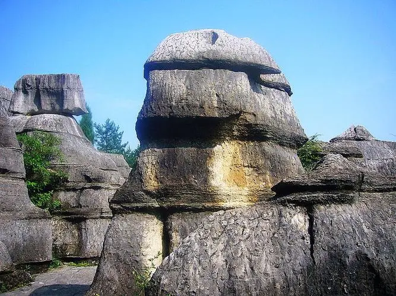

以地表石林为代表的典型的喀斯特地貌景观十分吸引人。该类景观表面呈虎皮状，形成一系列各不相同的观赏景点。在这里，群峰壁立，奇峰危石，可谓千姿百态，石门、石寨、石柱等，酷似人工堆叠，却无人工痕 迹；飞禽走兽的石头，栩栩如生、惟妙惟肖；田园阡陌、炊烟袅袅，清泉碧池、悬崖雪瀑，白鹤青 、 碧空鸟语，清丽若未施粉黛的闺秀楚楚动人。其主要景观有情朗峰、香炉山、巨扇、地缝一线天、化石 、石鼓、将军石等数十处。显示出万盛石林景观的美感与灵性。
以地表石林为代表的典型的喀斯特地貌景观十分吸引人。该类景观表面呈虎皮状，形成一系列各不相同的观赏景点。在这里，群峰壁立，奇峰危石，可谓千姿百态，石门、石寨、石柱等，酷似人工堆叠，却无人工痕 迹；飞禽走兽的石头，栩栩如生、惟妙惟肖；田园阡陌、炊烟袅袅，清泉碧池、悬崖雪瀑，白鹤青 、 碧空鸟语，清丽若未施粉黛的闺秀楚楚动人。其主要景观有情朗峰、香炉山、巨扇、地缝一线天、化石 、石鼓、将军石等数十处。显示出万盛石林景观的美感与灵性。
.jpg)
听泉峡是一个由岩溶塌陷、断裂形成的峡谷。其长近300米，宽1―2米，深约80米，有一窄道通入。 初入峡，峡极窄，道极险，行人只能成单列而过。但见峡涧峭壁，均由重达数吨，大小形状相似的方形石头向上一层层叠成，且每层间的缝线横竖有规有矩，恰如人工用石头，砌成的墙体一般，真是一个难得的盖世奇观，令人叹为观止，连声叫绝。继续前行，峡越深，光越暗，壁如刀削，危岩如同虎踞，树丛枯树枝如同鬼怪骷髅，藤蔓遍布如蛇阵盖天，岩上水滴如蛇之毒液。倘若要是只身一人游到此，面对恐惧之景，胆小者，在冽冽的凉风侵袭下，定会不寒而栗，不知所措；勇敢者，则镇定自若，欣然走向新的景点，去领略更为神奇的风景。 经过这一关后，逐渐变得开朗，峡中暗河，水从石隙、乱石堆中汩汩溢出。沙沙然，锵锵然，叮咚悦耳。恍若唐人白居易笔下琵琶女郎纤纤细手弹拨出的“大弦嘈嘈如急雨，小弦嘈嘈如私语。嘈嘈切切错杂弹，大珠小珠落玉盘”的琵琶声。但如果遇上多洪水的季节，暗河流水增大，水涌触石，声如宏钟鼓乐。为此，定名该泉叫琴泉。不少游人峡中走累后，总爱坐在泉边，一边喝着泉水，一边闭目欣赏着“叮咚”似琴的泉水声。倾刻间倦意即消。
天籁谷 天籁谷位于重庆万盛AAAAA级风景区黑山谷景观带内有两大商业中心，五大主题园区，星级主题酒店群落，二十三项游乐项目，其中包括太空风洞娱乐，室内滑雪场、直升机停机坪、儿童汽车赛事乐园、商业小镇（影院、超市、医疗中心、银行）等。成为名副其实的世界级度假旅游区。 两大商业中心 风情商小镇 温泉商业小镇 五大主题公园区 水乡音乐公园，游乐温泉公园，SPA森林公园，中药养生公园，果岭趣味公园。 星级主题酒店群落 五星级温泉酒店，六星级湖滨酒店，七星级天籁SPA酒店。 二十三项游乐项目 太空风洞，低空飞行俱乐部，四季滑雪场，儿童汽车赛事乐园等